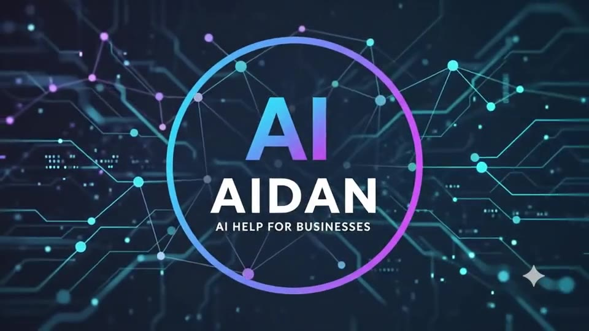

הדרך הפשוטה להכניס AI לעסק שלכם
- לימוד עצמי עם מדריכים
- בניית מערכות צ'אטבוטים
- אתרים לעסק שלכם
- אפליקציות ל-App Store
ספריית מדריכי AI - 19 מדריכים
הסברים ברורים, בעברית, על כלי ה-AI המובילים - מיסודות ועד Claude Code, MCP ואוטומציה עסקית.
איך הופכים את Claude Desktop לתמיכה מלאה ב-RTL
Claude Desktop בנוי ברירת מחדל משמאל-לימין. הנה הדרכים האמיתיות (פאצ'ים, ערכות נושא ו-CSS) להפוך אותו לעברית נוחה לקריאה.
לקריאת המדריך ← השוואהClaude מול ChatGPT: מה ההבדל בפועל?
השוואה מעשית - כתיבה, קוד, ניתוח מסמכים ארוכים, ומחיר - כדי לדעת מתי להשתמש בכל אחד.
לקריאת המדריך ← כלימה זה Artifacts ואיך להשתמש בהם נכון
הפאנל הצדדי של Claude שמריץ קוד, דפי אינטרנט ותרשימים בזמן אמת.
לקריאת המדריך ← טכניMCP (Model Context Protocol) בהסבר פשוט
הפרוטוקול שמאפשר ל-AI להתחבר לכלים ולנתונים שלכם - מוסבר בלי בלבול.
לקריאת המדריך ← Claude CodeSkills: איך להפוך את Claude Code למומחה בפרויקט שלכם
חבילת הוראות שנטענת לפי הצורך ונותנת מומחיות עקבית לצוות כולו.
לקריאת המדריך ← לעסקים6 תהליכים בעסק שכדאי לאוטמט עם AI כבר החודש
שירות לקוחות, ניהול תוכן, סינון לידים ועוד - עם דוגמאות מהשטח.
לקריאת המדריך ←דוגמאות חיות - נסו בעצמכם
לא הדמיות - כלים אמיתיים שרצים עכשיו בדפדפן. לוחצים ומנסים, בלי הרשמה.
בדיקת התאמה ל-AI
שאלון אינטראקטיבי - עונים על כמה שאלות ומקבלים מיד ציון, המלצה מותאמת ודוגמה קונקרטית, בלי לחכות למייל. רץ כולו בדפדפן.
נסו את זה בעצמכם ← כלי חידמו: צ'אטבוט שירות לקוחות
דוגמה אינטראקטיבית לסוג הבוט שיכול לרוץ בעסק שלכם - שואלים שאלה ומקבלים תשובה אמיתית מהבוט, לא סקריפט מוקלט.
נסו לשוחח איתו ← כלי חידמו: הודעה שהופכת לליד ב-CRM
כתבו הודעה חופשית כמו לקוח אמיתי, וראו אותה הופכת מיד לכרטיס ליד מסודר - עם תקציב, תחום עניין ורמת חום - בלוח CRM חי.
נסו את זה בעצמכם ←איך אני יכול לעזור
מעבר למדריכים - ליווי מעשי להטמעת AI ואוטומציה בעסק או בעבודה האישית שלכם.
הטמעת סוכני AI ואוטומציה חכמה
בניית תהליכי אוטומציה מבוססי AI שחוסכים זמן - מענה ללקוחות, מיון וניקוד פניות, יצירת תוכן ראשוני. ראו דוגמה חיה בדף הדוגמאות.
התאמת כלים אישית
הגדרה והתאמה של Claude, ChatGPT וכלים נלווים כך שיתאימו בדיוק לצרכים שלכם.
הדרכה וליווי
הדרכה אישית או צוותית - איך לשלב AI בעבודה היומיומית בלי להסתבך.
ייעוץ אסטרטגי
בניית מפת דרך לשילוב בינה מלאכותית בעסק - מזיהוי ההזדמנויות הכי משתלמות ועד יישום בשטח ומדידת התוצאה.
פיתוח אפליקציות ל-iPhone
בונה גם אפליקציות ל-App Store עם Xcode ו-SwiftUI - מרעיון ראשוני ועד פרסום בחנות, בעזרת AI לאורך כל הדרך. ראו את המדריך המלא.
רוצים לבנות משהו ביחד?
אשמח לשמוע על הפרויקט או האתגר שלכם ולבדוק איך AI ואוטומציה יכולים לעזור.